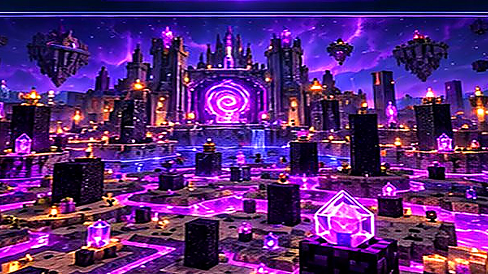

Graj
Wybierz profil, zainstaluj i uruchom grę
NOWA ODSŁONA MINEVORA / WINDOWS
Profile Minecraft Java, mody i własny styl gry w jednym launcherze. MINEVORA — wygodny start w świat Minecrafta.
Minecraft Java · Wydanie Windows · Wersja 19.0.0

01 / LAUNCHER
W launcherze wybierasz wersję Minecraft i instalujesz loader Vanilla, Fabric, Forge, NeoForge lub Quilt. Prawdziwy start gry wymaga zalogowania Microsoft i posiadania Minecraft Java.
Wybierz profil, zainstaluj i uruchom grę

Importuj lokalne mody JAR

Podgląd PNG, edytor 3D w przygotowaniu

W przygotowaniu
02 / MODY
Dodawaj mody zgodne z wybranym loaderem. MINEVORA sprawdza podstawowe metadane JAR, a pełna zgodność zależności pozostaje po stronie użytkownika.
Zobacz instalację →03 / MINIGRY
Zapowiedzi trybów serwera. Tryby nie są jeszcze dostępne do uruchamiania z launchera.

04 / PVP
Własne ustawienia HUD — W przygotowaniu
05 / SKÓRKI
Przeglądaj PNG 64 × 64. Edytor 3D — W przygotowaniu
06 / SPOŁECZNOŚĆ
Nowości o launcherze MINEVORA i serwerze znajdziesz na Discordzie.
Otwórz Discord ↗07 / WIĘCEJ
Pobierz ZIP dla Windows i rozpakuj paczkę.
Otwórz plik START_MINEVORA.bat. Python pobierze biblioteki.
Wybierz wersję, zainstaluj Minecraft i zaloguj Microsoft.